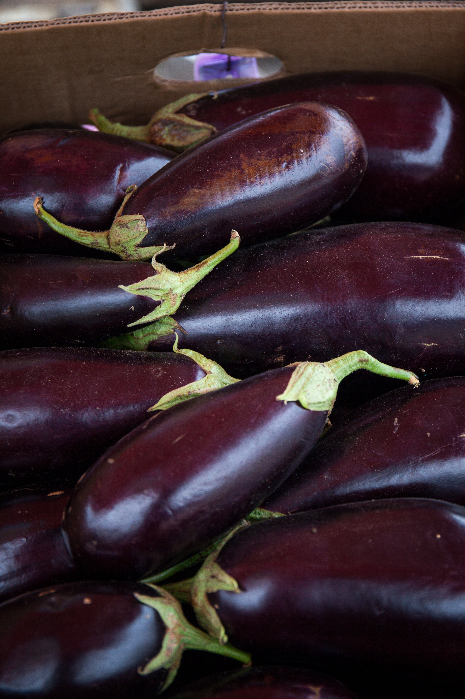

About Eggplant
Eggplant, also known as aubergine, is a versatile vegetable with a unique taste and texture. It comes in various shapes and colors, including purple, white, and green. Eggplants are a good source of vitamins and minerals and can be enjoyed in a variety of dishes, from stir-fries to casseroles. Growing eggplants in your garden allows you to enjoy fresh and flavorful produce.
Steps to Grow Eggplant
- Choose a sunny location with well-drained soil for planting eggplants.
- Start eggplant seeds indoors 6-8 weeks before the last expected frost date.
- Transplant seedlings outdoors after the danger of frost has passed and the soil has warmed.
- Space eggplant plants about 18-24 inches apart in rows.
- Water eggplants consistently, keeping the soil evenly moist but not waterlogged.
- Fertilize with a balanced fertilizer to promote healthy growth and fruit development.
- Harvest eggplants when they reach the desired size and are glossy and firm to the touch.
Extra Information
Eggplants are a versatile ingredient in many cuisines around the world. They can be grilled, roasted, stuffed, or used in dips like baba ganoush. There are various eggplant varieties, each with its own unique characteristics. Experiment with different types to discover your favorite eggplant varieties for home cultivation.